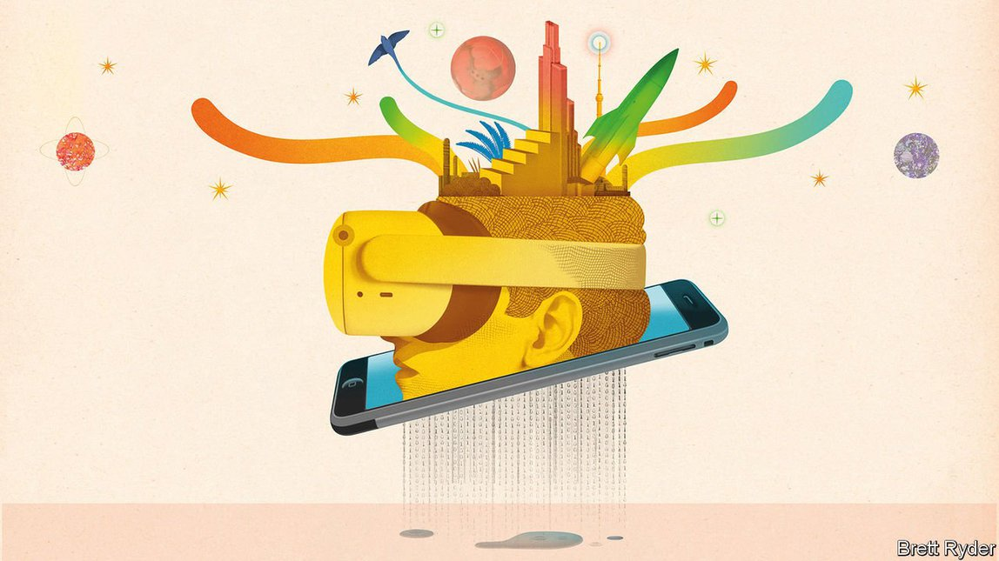
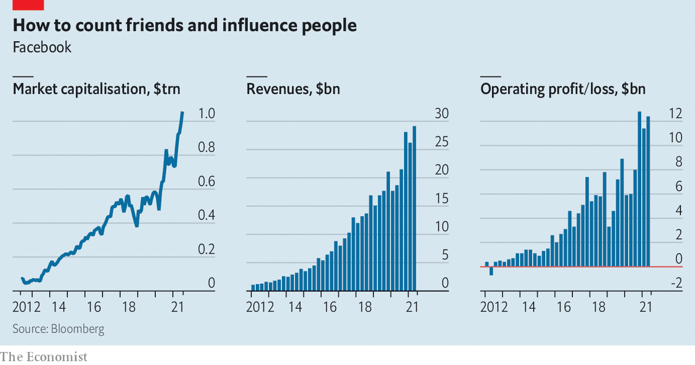
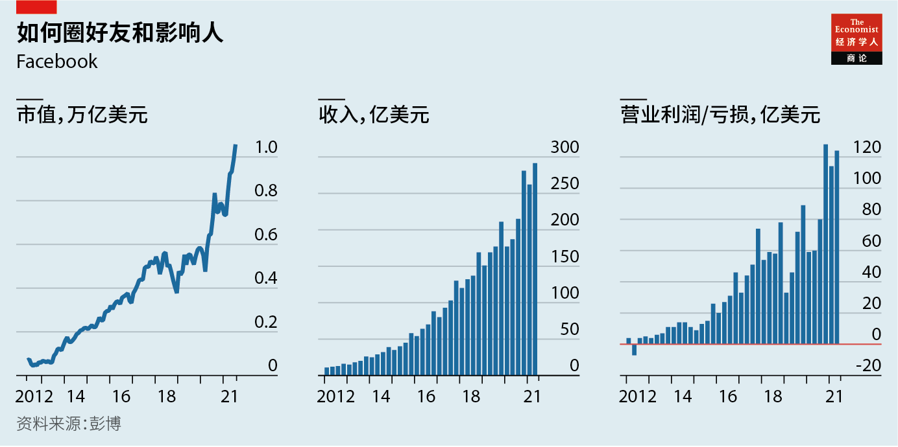

2021-08-12T06:08:59+00:00
Faceworld
脸谱宇宙
臉譜宇宙
Facebook eyes a future beyond social media
Facebook展望的未来超越社交媒体
Facebook展望的未來超越社交媒體
Advertising has made the social network into a trillion-dollar company. Can new ventures take it further?
广告让这个社交网络平台成为市值万亿美元的公司。新业务能带它走得更远吗？
廣告讓這個社交網絡平台成為市值萬億美元的公司。新業務能帶它走得更遠嗎？

FACEBOOK HAS always had two faces. One is the grimace of a firm that many people, in particular politicians, love to hate. President Joe Biden recently accused the social-media giant of “killing people” by spreading misinformation about vaccines against covid-19. (He later rowed back a bit after Facebook pointed out it does quite a lot to stop the spread of such content and to promote legitimate vaccine advice.)
Facebook一直都有两副面孔。一副是遭千夫所指尤其是又被政客拿来当靶子时的一脸苦相。最近，美国总统拜登指责这家社交媒体巨头传播有关新冠疫苗虚假消息的做法是在“杀人”。（在Facebook指出自己付出了不少努力来阻止此类内容的传播及宣传合理的接种建议后，他的语气有所缓和。）
Facebook一直都有兩副面孔。一副是遭千夫所指尤其是又被政客拿來當靶子時的一臉苦相。最近，美國總統拜登指責這家社交媒體巨頭傳播有關新冠疫苗虛假消息的做法是在“殺人”。（在Facebook指出自己付出了不少努力來阻止此類內容的傳播及宣傳合理的接種建議後，他的語氣有所緩和。）
The other face is a happy one of a firm that users, advertisers and investors cannot live without. It was grinning again on July 28th, when it presented second-quarter results. Revenues rose by 56%, year on year, to $29bn—despite Apple’s update in April to its iPhone operating system that let users easily opt out of being tracked around the web by apps like Facebook. That puts it on track to exceed $100bn in sales this financial year. Quarterly net profit hit $10.4bn, double that of a year ago. Despite a wobble in late trading after Facebook warned of slowing sales growth in coming quarters, it looks poised to become a paid-up member of the exclusive club of companies with a market capitalisation above $1trn, which it joined earlier this year (see chart).
另一副面孔是因为用户、广告主和投资者都离不开自己而喜形于色。7月28日，当它公布第二季度业绩时，脸上又绽放了笑容。尽管苹果在4月更新了iPhone操作系统，让其用户可以轻松选择不被Facebook等应用跟踪自己在网上的活动，但Facebook第二季度的收入仍然同比增长56%，达到290亿美元。这使得Facebook本财年的销售额有望突破1000亿美元。第二季度净利润达104亿美元，同比增长一倍。尽管在Facebook警告称未来几个季度销售增长将放缓之后，其股价在盘后交易中出现了波动，但它看起来势将成为市值万亿美元的高端企业俱乐部里的铁杆会员。它于今年早些时候加入了这个俱乐部（见图表）。
另一副面孔是因為用戶、廣告主和投資者都離不開自己而喜形於色。7月28日，當它公布第二季度業績時，臉上又綻放了笑容。儘管蘋果在4月更新了iPhone操作系統，讓其用戶可以輕鬆選擇不被Facebook等應用跟蹤自己在網上的活動，但Facebook第二季度的收入仍然同比增長56%，達到290億美元。這使得Facebook本財年的銷售額有望突破1000億美元。第二季度凈利潤達104億美元，同比增長一倍。儘管在Facebook警告稱未來幾個季度銷售增長將放緩之後，其股價在盤後交易中出現了波動，但它看起來勢將成為市值萬億美元的高端企業俱樂部里的鐵杆會員。它於今年早些時候加入了這個俱樂部（見圖表）。
How can a firm with such baggage be so successful? The answer also has two faces to it. With 2.9bn daily global users, Facebook’s main offerings—its flagship social network (known internally as Blue), photo-sharing on Instagram and messaging on WhatsApp and Messenger—are a digital magnifying glass of human nature. This glass amplifies the good (neighbourly help amid the pandemic) as well as the bad (conspiracy theories and quack cures). It also serves as a remarkable lens for advertisers to focus on the world’s consumers. And the two-facedness is likely to become more pronounced if Facebook succeeds with its biggest project yet: creating a “metaverse” that would combine a 3D digital world with the 3D physical one.
一家背负如此沉重包袱的公司怎么会这么成功？答案也有两个面向。在全球拥有29亿日活跃用户的Facebook的主要业务都是人性的数字放大镜，包括其王牌社交网络（在内部称为Blue）、Instagram的照片分享，以及WhatsApp和Messenger的即时消息等。这面镜子不仅放大了人性恶的一面（如阴谋论和江湖骗术），也放大了善的一面（如疫情期间的邻里互助）。它还为广告主提供了一个聚焦全球消费者的绝佳镜头。如果Facebook迄今为止最大的计划获得成功，它的这种两面性很可能会更加明显。这个计划就是创建一个将3D数字世界与3D物理世界结合起来的“元宇宙”。
一家背負如此沉重包袱的公司怎麼會這麼成功？答案也有兩個面向。在全球擁有29億日活躍用戶的Facebook的主要業務都是人性的數字放大鏡，包括其王牌社交網絡（在內部稱為Blue）、Instagram的照片分享，以及WhatsApp和Messenger的即時消息等。這面鏡子不僅放大了人性惡的一面（如陰謀論和江湖騙術），也放大了善的一面（如疫情期間的鄰里互助）。它還為廣告主提供了一個聚焦全球消費者的絕佳鏡頭。如果Facebook迄今為止最大的計劃獲得成功，它的這種兩面性很可能會更加明顯。這個計劃就是創建一個將3D數字世界與3D物理世界結合起來的“元宇宙”。
At its core Facebook is a giant advertising machine. Ads generate 98% of revenue. Blue is a dominant ad platform internationally, raking in some $55bn last year, estimates KeyBanc Capital Markets, an investment firm (Facebook does not break out results by service). Instagram, which Facebook bought in 2012 for $1bn, now chips in another $20bn or more, taking its share of overall ad revenues to nearly 30%, from just over 10% in 2017.
从本质上说，Facebook是一台巨型广告机器。广告占到它收入的98%。投资公司KeyBanc Capital Markets估计，Blue是在国际上占主导地位的广告平台，去年收入约550亿美元（Facebook的业绩不按业务划分）。Facebook在2012年以10亿美元收购的Instagram如今贡献了200亿美元或更多，在广告总收入中的占比从2017年的略高于10%增长到目前的近30%。
從本質上說，Facebook是一台巨型廣告機器。廣告佔到它收入的98%。投資公司KeyBanc Capital Markets估計，Blue是在國際上佔主導地位的廣告平台，去年收入約550億美元（Facebook的業績不按業務劃分）。Facebook在2012年以10億美元收購的Instagram如今貢獻了200億美元或更多，在廣告總收入中的佔比從2017年的略高於10%增長到目前的近30%。
Debra Aho Williamson of eMarketer, a data provider, calls Facebook’s ability to target ads “incredibly precise”. Advertisers value this precision highly: Facebook earns $8 a quarter for every one of its users, nearly twice as much as Twitter. The firm watches what its users do not only on its own services, but almost everywhere else online. This lets it pick which products to offer to a given user, identify others with similar interests and determine whether they buy anything after seeing an ad.
数据供应商eMarketer的黛布拉·阿霍·威廉姆森（Debra Aho Williamson）称，Facebook的定向广告“精准到不可思议”。广告主非常看重这种精准度：Facebook每季度从每位用户身上赚取八美元，几乎是推特的两倍。Facebook不仅关注用户在自家服务上的行为，还关注他们在其他几乎所有在线服务上的行为。这让它可以选择性地向特定用户推荐商品，识别出其他有类似兴趣的用户，并确定他们是否在看到广告后购买了什么东西。
數據供應商eMarketer的黛布拉·阿霍·威廉姆森（Debra Aho Williamson）稱，Facebook的定向廣告“精準到不可思議”。廣告主非常看重這種精準度：Facebook每季度從每位用戶身上賺取八美元，幾乎是推特的兩倍。Facebook不僅關注用戶在自家服務上的行為，還關注他們在其他幾乎所有在線服務上的行為。這讓它可以選擇性地向特定用戶推薦商品，識別出其他有類似興趣的用戶，並確定他們是否在看到廣告後購買了什麼東西。
Even before the pandemic hit, this was hard to resist: for smaller firms with fewer resources to run sophisticated marketing operations, which make up the bulk of Facebook’s 10m advertisers, but also for big global brands. Even Chinese sellers are spending billions of dollars on Facebook, says Brian Wieser of GroupM, which places ads on behalf of brands. Facebook’s apps may be banned in China, but Chinese merchants can plug their wares to Western consumers thanks to firms such as Wish, an American online marketplace that helps arrange ads, payment and shipping.
即便在新冠疫情爆发之前，这也让人难以抗拒：无论是对那些没有足够的资源开展复杂营销活动的小公司（它们在Facebook的1000万广告主中占大部分），还是那些全球性的大品牌。为品牌投放广告的群邑集团（GroupM）的布赖恩·威泽（Brian Wieser）表示，就连中国卖家也开始在Facebook上花费数十亿美元。中国国内可能禁用Facebook的应用，但有了像Wish这样的美国在线市场帮助商家安排广告、支付和配送，中国的商家可以向西方消费者推销自己的商品。
即便在新冠疫情爆發之前，這也讓人難以抗拒：無論是對那些沒有足夠的資源開展複雜營銷活動的小公司（它們在Facebook的1000萬廣告主中佔大部分），還是那些全球性的大品牌。為品牌投放廣告的群邑集團（GroupM）的布賴恩·威澤（Brian Wieser）表示，就連中國賣家也開始在Facebook上花費數十億美元。中國國內可能禁用Facebook的應用，但有了像Wish這樣的美國在線市場幫助商家安排廣告、支付和配送，中國的商家可以向西方消費者推銷自己的商品。
Covid-19 has turbocharged Facebook’s machine. Self-isolating American adults spent on average nearly 35 minutes per day on Blue in 2020, according to eMarketer, two minutes more than the year before. That adds up to more than 10,000 additional years of collective attention. While some firms went belly-up or cut ad spending in last year’s recession, others were born: 6.6m in America alone since the start of the pandemic. Many crave some of the extra attention. Today it is as unthinkable to run an online consumer business without targeted ads as it once was to run one with no shopfront, says Mark Shmulik of Bernstein, a broker. A bigger slug of such firms’ budgets will be spent on Facebook and its fellow ad-tech giant, Google, he says. Admen are calling it “the new rent”.
新冠疫情让Facebook的广告机器更加动力十足。根据eMarketer的数据，2020年，自我隔离的美国成年人平均每天花在Blue上的时间接近35分钟，比上一年多了两分钟。这让总体关注时长又增加了一万多年。尽管一些公司在去年的经济衰退中破产或者削减了广告费，但另一些公司却逆势而生：自疫情爆发以来，仅美国就新成立了660万家公司。很多公司渴望得到一些额外的关注。经纪公司盛博的马克·什穆利克（Mark Shmulik）表示，如今运营电商业务而不做定向广告，就像过去做这种买卖而没有店面一样不可想象。他说，这类公司会把更大一部分预算花在Facebook和另一家广告科技巨头谷歌身上。广告人称之为“新租金”。
新冠疫情讓Facebook的廣告機器更加動力十足。根據eMarketer的數據，2020年，自我隔離的美國成年人平均每天花在Blue上的時間接近35分鐘，比上一年多了兩分鐘。這讓總體關注時長又增加了一萬多年。儘管一些公司在去年的經濟衰退中破產或者削減了廣告費，但另一些公司卻逆勢而生：自疫情爆發以來，僅美國就新成立了660萬家公司。很多公司渴望得到一些額外的關注。經紀公司盛博的馬克·什穆利克（Mark Shmulik）表示，如今運營電商業務而不做定向廣告，就像過去做這種買賣而沒有店面一樣不可想象。他說，這類公司會把更大一部分預算花在Facebook和另一家廣告科技巨頭谷歌身上。廣告人稱之為“新租金”。
Facebook has added more than 2m renters in the past 15 months. It will add more as economies reopen and digital ads, which now make up 60% of overall ad spending in America, keep chipping away at old media. Facebook has warned of a “greater impact” of Apple’s tracking opt-out in the current quarter; Flurry, a data firm, estimates that four in five iPhone users have opted out. But even if this makes Facebook’s targeting a bit less effective, it will still be at least as good as its rivals’, predicts Mark Mahaney of Evercore ISI, an investment bank.
在过去15个月里，Facebook新增了200多万“租户”。随着经济重启以及数字广告（目前占美国广告总支出的60%）继续蚕食传统媒体的份额，这一数字还会继续增加。Facebook警告称，苹果关闭应用跟踪的功能将在本季度产生“更大影响”；数据公司Flurry估计，五分之四的iPhone用户选择了关闭应用跟踪。即便Facebook定向广告的效果因此打了些折扣，但至少仍然不输其竞争对手，投资银行Evercore ISI的马克·马哈尼（Mark Mahaney）预计。
在過去15個月里，Facebook新增了200多萬“租戶”。隨着經濟重啟以及數字廣告（目前佔美國廣告總支出的60%）繼續蠶食傳統媒體的份額，這一數字還會繼續增加。Facebook警告稱，蘋果關閉應用跟蹤的功能將在本季度產生“更大影響”；數據公司Flurry估計，五分之四的iPhone用戶選擇了關閉應用跟蹤。即便Facebook定向廣告的效果因此打了些折扣，但至少仍然不輸其競爭對手，投資銀行Evercore ISI的馬克·馬哈尼（Mark Mahaney）預計。
And though on July 23rd American trustbusters got another three weeks to refile a lawsuit against Facebook, which had been thrown out last month for lack of evidence, they will struggle to prove that it is a social-networking monopolist under current competition law. For all the anti-tech bluster in Washington, law is unlikely to change as long as Congress stays polarised.
6月，美国反垄断机构对Facebook提起的诉讼因证据不足而被驳回。虽然7月23日它们又获得了三周时间，准备再次对Facebook发起诉讼，但根据现行的竞争法，还是很难证明Facebook是社交网络的垄断者。尽管打压科技巨头的呼声在华盛顿不绝于耳，但只要国会的意见保持分化，现有法律就不太可能被改变。
6月，美國反壟斷機構對Facebook提起的訴訟因證據不足而被駁回。雖然7月23日它們又獲得了三周時間，準備再次對Facebook發起訴訟，但根據現行的競爭法，還是很難證明Facebook是社交網絡的壟斷者。儘管打壓科技巨頭的呼聲在華盛頓不絕於耳，但只要國會的意見保持分化，現有法律就不太可能被改變。
The bigger threat to Facebook’s prospects, which has long preoccupied Mark Zuckerberg, its co-founder and boss, is that the virtual masses tire of its apps and move elsewhere, pulling advertisers with them. In the past two years a new generation of social media has emerged that poses just this threat. Although Facebook’s share of American digital advertising has continued to grow, its global social-media advertising has been edging down since 2016. The challengers range from specialists such as Clubhouse and Discord, two audio-chat services, to Snapchat and TikTok, which take on Blue and especially Instagram more directly. TikTok fans in America now spend more than 21 hours a month on the video app, compared with less than 18 hours that users spend on Blue, according to App Annie, a market-research firm.
对Facebook前景威胁更大的是网络用户对它心生厌倦，转而选择其他应用，并带走广告主。这一直困扰着Facebook的联合创始人兼老板扎克伯格。过去两年里，新一代社交媒体的出现就构成了这样的威胁。尽管Facebook在美国的数字广告业的份额持续增长，但其全球社交媒体的广告业务自2016年以来一直在下滑。它的挑战者既有Clubhouse、Discord等专门的语音聊天服务商，也有Snapchat和TikTok（它们更直接地与Blue，尤其是Instagram展开竞争）。根据市场研究公司App Annie的数据，美国的TikTok粉丝现在每个月花在这款视频应用上的时间超过21个小时，而用户在Blue上花的时间不到18个小时。
對Facebook前景威脅更大的是網絡用戶對它心生厭倦，轉而選擇其他應用，並帶走廣告主。這一直困擾着Facebook的聯合創始人兼老闆扎克伯格。過去兩年里，新一代社交媒體的出現就構成了這樣的威脅。儘管Facebook在美國的數字廣告業的份額持續增長，但其全球社交媒體的廣告業務自2016年以來一直在下滑。它的挑戰者既有Clubhouse、Discord等專門的語音聊天服務商，也有Snapchat和TikTok（它們更直接地與Blue，尤其是Instagram展開競爭）。根據市場研究公司App Annie的數據，美國的TikTok粉絲現在每個月花在這款視頻應用上的時間超過21個小時，而用戶在Blue上花的時間不到18個小時。
In the past Facebook might have bought smaller rivals, as it did with Instagram. With trustbusters looking on, it is instead placing a series of big bets. The first is on the “creator economy”, where people make money from digital works. This is an extension of its ad business, but one in which it has fallen behind. TikTok and YouTube, in particular, have been better at attracting creators who keep users glued to their screens. In April Facebook said it was developing new audio features, including Clubhouse-like chat rooms where listeners can tip performers. In June it launched Bulletin, a newsletter-hosting service similar to Substack, which popularised the genre. This month Mr Zuckerberg vowed to shower creators on Blue and Instagram with $1bn by the end of next year (he didn’t say what form the payments would take).
放在过去，Facebook可能会像收购Instagram一样，把规模较小的竞争对手收入囊中。如今，被反托拉斯机构紧盯着的Facebook转而开始押下一连串大赌注。第一个赌注是“创作者经济”，即让人们从自己的数字作品中挣钱。这是它的广告业务的延伸，但在这方面它已经落后于人。TikTok和YouTube在这方面尤其出色，它们更能吸引那些让用户目不转睛地盯着屏幕的创作者。今年4月，Facebook表示自己正在开发新的音频功能，包括类似Clubhouse的聊天室，听众可以在里面给主播打赏。6月，它推出了一款类似于Substack的时事通讯托管服务（正是Substack带火了这一形式）Bulletin。7月，扎克伯格承诺，到明年年底将向Blue和Instagram的创作者们分发10亿美元，不过他没有说明支付方式。
放在過去，Facebook可能會像收購Instagram一樣，把規模較小的競爭對手收入囊中。如今，被反托拉斯機構緊盯着的Facebook轉而開始押下一連串大賭注。第一個賭注是“創作者經濟”，即讓人們從自己的數字作品中掙錢。這是它的廣告業務的延伸，但在這方面它已經落後於人。TikTok和YouTube在這方面尤其出色，它們更能吸引那些讓用戶目不轉睛地盯着屏幕的創作者。今年4月，Facebook表示自己正在開發新的音頻功能，包括類似Clubhouse的聊天室，聽眾可以在裡面給主播打賞。6月，它推出了一款類似於Substack的時事通訊託管服務（正是Substack帶火了這一形式）Bulletin。7月，扎克伯格承諾，到明年年底將向Blue和Instagram的創作者們分發10億美元，不過他沒有說明支付方式。
Facebook’s second bet looks beyond advertising to e-commerce. It already hosts 1.2m online shops on Blue and Instagram. That puts it in the same league as Shopify, a fast-growing rival to Amazon, which has 1.7m. A month ago Facebook introduced a new way to let buyers try on clothes virtually. It also plans to link its “Shops” offering with Marketplace, its existing peer-to-peer trading service, and WhatsApp, which it wants to turn into a vehicle for chat-based “conversational commerce”, the latest thing in online shopping. Later this year it wants to phase in Diem, its controversial cryptocurrency, which would beef up its payments infrastructure.
Facebook的第二个赌注是在广告以外放眼电子商务。它在Blue和Instagram上已经有了120万家网店。这让它与快速增长的Shopify旗鼓相当，这个亚马逊的劲敌拥有170万家网店。一个月前，Facebook推出了一种让买家虚拟试衣的新方式。它还计划将其“店铺”（Shops）功能与其现有的点对点交易服务Marketplace以及WhatsApp连接起来。它希望将WhatsApp转变为基于聊天的“对话式商务”工具，这是在线购物的最新趋势。Facebook希望能在今年晚些时候逐步启用其备受争议的加密货币Diem，以加强其支付基础设施。
Facebook的第二個賭注是在廣告以外放眼電子商務。它在Blue和Instagram上已經有了120萬家網店。這讓它與快速增長的Shopify旗鼓相當，這個亞馬遜的勁敵擁有170萬家網店。一個月前，Facebook推出了一種讓買家虛擬試衣的新方式。它還計劃將其“店鋪”（Shops）功能與其現有的點對點交易服務Marketplace以及WhatsApp連接起來。它希望將WhatsApp轉變為基於聊天的“對話式商務”工具，這是在線購物的最新趨勢。Facebook希望能在今年晚些時候逐步啟用其備受爭議的加密貨幣Diem，以加強其支付基礎設施。
For now Facebook has waived seller fees, but they could add a few billion dollars to its turnover as soon as next year. Besides bringing in non-advertising revenues, an e-commerce business would also help the firm with its tracking problem. If shoppers spend more time and leave more data on its platform the inability to follow them elsewhere on the web becomes less important. Mr Shmulik expects e-commerce to fragment into such walled gardens, each combining shopping and advertising, and operated by a tech giant.
目前，Facebook免除了商家付费。但最快在明年，它们可能就会让它的营业额增长数十亿美元。除了带来非广告收入，电子商务业务还能帮助Facebook解决追踪用户的问题。如果购物者在它自己的平台上花了更多时间、留下更多数据，那么无法在网上其他地方跟踪他们也就不那么重要了。什穆利克预计，电子商务会分解成一个个这样的围墙花园，每个都将购物和广告结合起来，并由一家科技巨头运营。
目前，Facebook免除了商家付費。但最快在明年，它們可能就會讓它的營業額增長數十億美元。除了帶來非廣告收入，電子商務業務還能幫助Facebook解決追蹤用戶的問題。如果購物者在它自己的平台上花了更多時間、留下更多數據，那麼無法在網上其他地方跟蹤他們也就不那麼重要了。什穆利克預計，電子商務會分解成一個個這樣的圍牆花園，每個都將購物和廣告結合起來，並由一家科技巨頭運營。
Mr Zuckerberg’s grandest gamble concerns the metaverse. When he spent $2bn in 2014 to buy Oculus, a maker of virtual-reality (VR) gear, many thought he was buying himself a toy. But in recent years Facebook has made other VR acquisitions, most recently BigBox VR, developer of “Population: One”, a shooter game similar to “Fortnite”. This hands Facebook control of a hardware platform for VR and “augmented reality” (AR), which serves users digital information as they survey the real world through smart spectacles and the like.
扎克伯格最大的豪赌是元宇宙。2014年，当他斥资20亿美元收购虚拟现实（VR）设备制造商Oculus时，很多人认为他是给自己买了个玩具。但最近几年，Facebook还收购了其他几家VR公司，包括最近收购的BigBox VR，它开发了类似《堡垒之夜》（Fortnite）的射击游戏《Population: One》。这让Facebook掌握了一个VR和AR（增强现实）的硬件平台，当用户通过智能眼镜等设备勘察真实世界时，该平台为他们提供数字信息。
扎克伯格最大的豪賭是元宇宙。2014年，當他斥資20億美元收購虛擬現實（VR）設備製造商Oculus時，很多人認為他是給自己買了個玩具。但最近幾年，Facebook還收購了其他幾家VR公司，包括最近收購的BigBox VR，它開發了類似《堡壘之夜》（Fortnite）的射擊遊戲《Population: One》。這讓Facebook掌握了一個VR和AR（增強現實）的硬件平台，當用戶通過智能眼鏡等設備勘察真實世界時，該平台為他們提供數字信息。
As with e-commerce, part of Facebook’s rationale may be to lessen its dependence on the whims of hardware-makers such as Apple. The potential prize is large. Sales of Oculus headsets contributed around $1bn to Facebook’s revenues last year. If the technology keeps improving, VR and AR are the obvious next phase of gaming, which has matured into an industry with global revenues of $180bn.
和电子商务一样，Facebook这样做的部分原因可能是为了减少对态度变化无常的硬件制造商的依赖，比如苹果。回报可能也很巨大。去年，Oculus头显的销售为Facebook贡献了约10亿美元的收入。游戏业已经成长为一个全球营收达1800亿美元的产业，如果技术不断改进，VR和AR显然将成为游戏业的下一个阶段。
和電子商務一樣，Facebook這樣做的部分原因可能是為了減少對態度變化無常的硬件製造商的依賴，比如蘋果。回報可能也很巨大。去年，Oculus頭顯的銷售為Facebook貢獻了約10億美元的收入。遊戲業已經成長為一個全球營收達1800億美元的產業，如果技術不斷改進，VR和AR顯然將成為遊戲業的下一個階段。
Meta-morphosis
变形记
變形記
Mr Zuckerberg’s ambitions do not stop there, however. He doesn’t see the metaverse, which now has its own division within the firm, merely as a place to enjoy games or other immersive entertainment. Instead, he envisages it as a virtual space where people live and work, in keeping with a dream that geeks have harboured since 1992, when the term “metaverse” was coined by Neal Stephenson, a science-fiction author. In five years’ time, Mr Zuckerberg has said, he would like Facebook no longer to be seen primarily as a social-media company but as a metaverse company.
然而，扎克伯格的雄心不止于此。尽管Facebook内部已经设立了专门的元宇宙部门，但扎克伯格并不仅仅把元宇宙视为享受游戏或其他沉浸式娱乐的地方，而是把它设想为人们生活和工作的虚拟空间，也就是自1992年科幻作家尼尔·斯蒂芬森（Neal Stephenson）创造“元宇宙”一词以来极客们一直心怀的梦想。扎克伯格表示，他希望五年之后，Facebook首先被视为一家元宇宙公司，而不是社交媒体公司。
然而，扎克伯格的雄心不止於此。儘管Facebook內部已經設立了專門的元宇宙部門，但扎克伯格並不僅僅把元宇宙視為享受遊戲或其他沉浸式娛樂的地方，而是把它設想為人們生活和工作的虛擬空間，也就是自1992年科幻作家尼爾·斯蒂芬森（Neal Stephenson）創造“元宇宙”一詞以來極客們一直心懷的夢想。扎克伯格表示，他希望五年之後，Facebook首先被視為一家元宇宙公司，而不是社交媒體公司。
That would make Facebook cool again. It would also bring more scrutiny from critics worried about the firm’s power. If users start spending 35 hours a week immersed in its virtual world, rather than 35 minutes a day, this may invite regulation that actually bites. For now, the metaverse is inviting something Mr Zuckerberg fears more: competition. Others are sizing up the field, from video-game firms like Roblox and Epic Games, to other tech giants. Apple is reportedly planning its own AR glasses; Microsoft already sells AR goggles. If Facebook beats them to metaverse supremacy, it will have plenty to grin about. Otherwise, expect grimacing. ■
这将让Facebook再次变得酷炫。同时也会让那些担心它势力过大的批评者更加盯紧它。如果用户沉浸在它的虚拟世界中的时间开始变成每周35小时，而不是每天35分钟，可能就会招致真正让它伤筋动骨的监管。目前，元宇宙带来的东西是扎克伯格更担心的：竞争。从Roblox、Epic Games等视频游戏公司，到其他科技巨头，很多公司都在评估这个领域。据报道，苹果正计划推出自己的AR眼镜，而微软的AR眼镜已经上市销售了。如果Facebook能打败它们，成为元宇宙霸主，它可就有很多理由咧嘴笑了。否则就等着看它愁眉苦脸吧。
這將讓Facebook再次變得酷炫。同時也會讓那些擔心它勢力過大的批評者更加盯緊它。如果用戶沉浸在它的虛擬世界中的時間開始變成每周35小時，而不是每天35分鐘，可能就會招致真正讓它傷筋動骨的監管。目前，元宇宙帶來的東西是扎克伯格更擔心的：競爭。從Roblox、Epic Games等視頻遊戲公司，到其他科技巨頭，很多公司都在評估這個領域。據報道，蘋果正計劃推出自己的AR眼鏡，而微軟的AR眼鏡已經上市銷售了。如果Facebook能打敗它們，成為元宇宙霸主，它可就有很多理由咧嘴笑了。否則就等着看它愁眉苦臉吧。